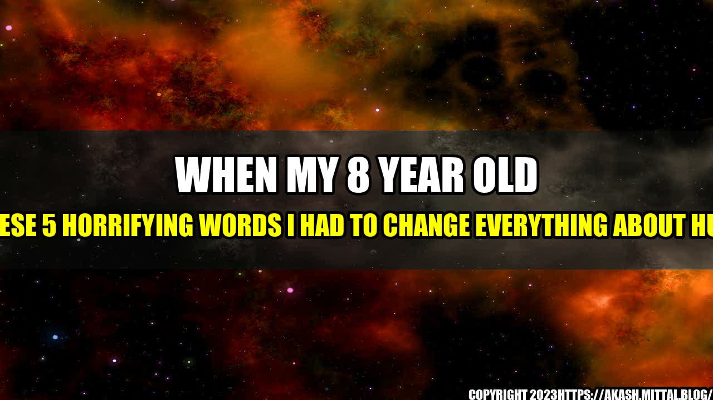

When My 8 Year Old Said These 5 Horrifying Words I Had To Change Everything About HuffPost

It was like any other evening. My 8-year-old son and I were sitting on the couch, scrolling through my phone, when he looked up at me and said: "Mom, why is everything so negative?"
I was taken aback. It was a simple question, but it made me realize that I had been contributing to the problem. As a writer for HuffPost, I had been focusing on what was wrong with the world, instead of what was right. And my son had noticed.
The problem with online media
The online media industry is notorious for sensationalism and clickbait. It's all about getting the most clicks and shares, rather than providing valuable content. And unfortunately, negative news tends to get more attention than positive news.
Three out of four Americans believe the news media focuses too much on negative stories, according to a Pew Research Center survey.
Negative news stories are more likely to be shared on social media than positive ones, according to a study by the New York Times.
Celebrities often get more coverage for their scandals than for their charitable work.
So what can we do about it?
The solution: focusing on positivity
After my son's comment, I knew I had to make a change. I started looking for positive stories to write about, and encouraged my colleagues to do the same. And it wasn't just a feel-good exercise – there are real benefits to focusing on positivity.
Positive news stories inspire hope and motivate people to take action.
Positivity can have a direct impact on mental and physical health.
Positivity can create a stronger sense of community and empathy.
It's not about ignoring the problems in the world – it's about balancing the negative with the positive. And it's not just about the media industry – we can all make a difference by focusing on positivity in our everyday lives.
What you can do to contribute to positivity
Make a conscious effort to seek out positive news stories, and share them with your friends and family.
Write letters or emails to companies or organizations that are doing good work, and let them know that you appreciate it.
Don't engage in negative conversations or gossip – steer the conversation towards something positive instead.
Volunteer or donate to a cause that you're passionate about.
Curated by Team Akash.Mittal.Blog
Share on Twitter Share on LinkedIn